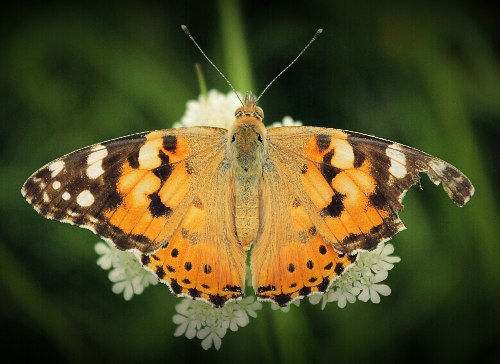

Imágen editada
- Paso 1:
-
Seleccionamos el ala que no está rota con las tijeras, despacio para ser precisos a la hora de la selección.
- Paso 2:
-
Copiamos y pegamos el ala.
- Paso 3:
-
Volteamos la copia del ala y la posicionamos donde está el ala rota.
- Paso 4:
-
La escalamos para que quede de forma natural.
- Paso 5:
- Paso 6:
-
Guardamos la imagen en formato PNG.
Imágen de la mariposa editada
Imágen original

Imágen editada